كل ما تحتاجه في ملف واحد: التثبيت، والمشاهدة، والرقابة.
بلا إعلاناتالاقتراحات بيدكبلا تسجيل دخولملفات للأطفالوقت محددالجوال ريموتاًتطبيق للجوالالعربية و English
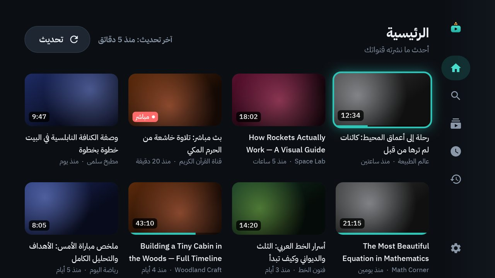
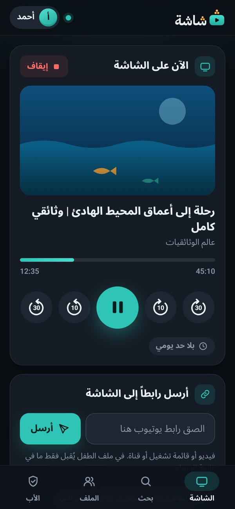
تطبيق يوتيوب لتلفاز البيت لتلفازات Google TV وAndroid TV وFire TVالإصدار 1.2 · أكتوبر 2026
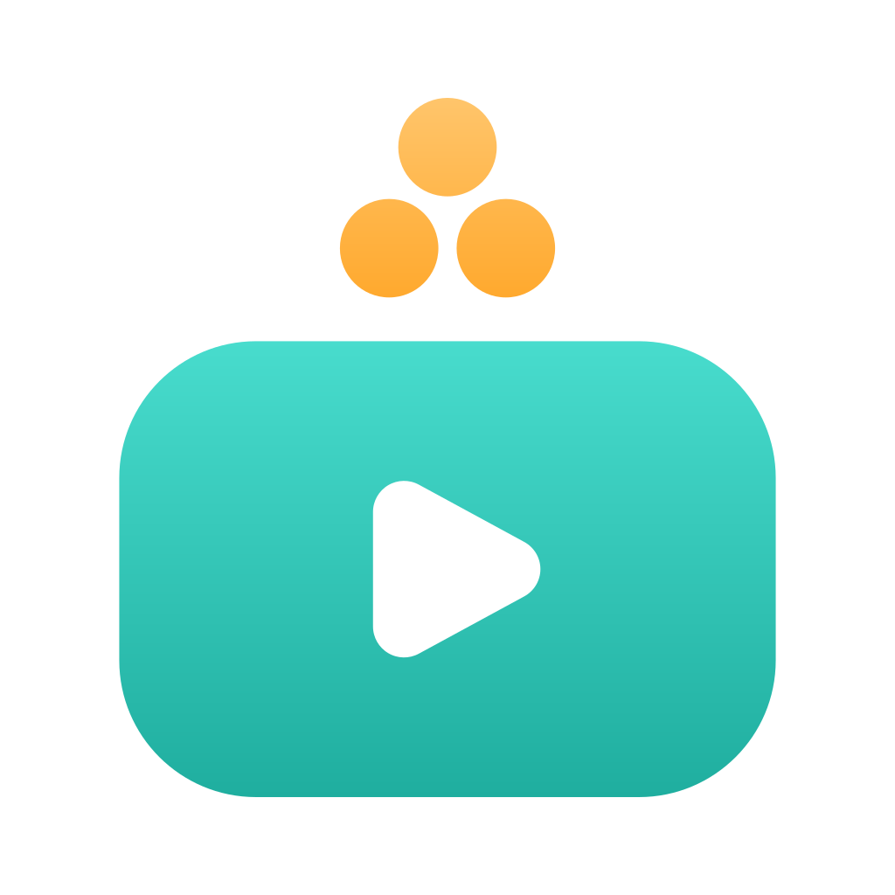
دليل شاشةالمحتويات
دليل شاشة
عشرة أجزاء قصيرة
اقرأ الجزء الذي تحتاجه فقط. التثبيت مرة واحدة، والباقي حين يلزم.
1ما هو «شاشة»2
2أي تلفاز يناسب «شاشة»؟3
3التثبيت في 9 خطوات6
4أول تشغيل11
5الاستخدام اليومي12
6للوالدين15
7الإعدادات18
8«شاشة» على جوالك21
9حل المشاكل23
10التحديثات24
الجزء 1
ما هو «شاشة»
تطبيق يوتيوب خاص بتلفاز البيت. يعرض ما تختاره أنت فقط.
بلا إعلانات، والاقتراحات بيدك
الرئيسية فيها أحدث فيديوهات قنواتك. والمقترحة تُظهرها أو تُخفيها لكل ملف.
ملفات للأطفال
يرى الطفل القنوات التي تسمح بها فقط.
وقت محدد
دقائق يومية وساعات مشاهدة لكل طفل.
الوضع الجاد
الفيديو الذي يبدأ يُشاهَد حتى نهايته، للأطفال وللكبار.
تخطي الإعلانات المقروءة
داخل الفيديو، وحده، ببيانات SponsorBlock.
البحث بالصوت
من ميكروفون الريموت، بالعربية أو الإنجليزية.
الجوال ريموتاً، وتطبيقاً
أرسل الروابط وافتح الوقت من الجوال، أو شاهد على الجوال نفسه.
بياناتك عندك
كل شيء على التلفاز. لا حسابات ولا تتبّع.
دليل شاشةالجزء 2 · أي تلفاز يناسب
الجزء 2
أي تلفاز يناسب «شاشة»؟
«شاشة» تطبيق أندرويد. يعمل على كل تلفاز أو جهاز نظامه أندرويد، وعلى أجهزة Fire TV من أمازون.
يعمل
Google TV وAndroid TV بنظام أندرويد 7.1 أو أحدث، من أي ماركة: Sony وTCL وHisense وPhilips وXiaomi. وكذلك Nvidia Shield وChromecast with Google TV وGoogle TV Streamer، وأجهزة العرض (Projectors) مثل XGIMI وNebula.
Amazon Fire TV بنظام Fire OS 6 أو أحدث: عصا Fire TV Stick وFire TV Cube وتلفازات Fire TV.
لا يعمل
Samsung (نظام Tizen) وLG (نظام webOS).
Roku وتلفازات Roku TV، وApple TV.
Fire TV الجديدة بنظام Vega OS (2025 و2026): Fire TV Stick 4K Select وFire TV Stick 4K الجيل الثالث وFire TV Stick HD إصدار 2026.
Fire TV القديمة بنظام Fire OS 5: عصا الجيل الثاني والنسخة الأساسية، وFire TV الجيل الأول والثاني.
تلفازات لها نظام خاص غير أندرويد: Hisense (VIDAA) وPhilips (Titan OS) وTCL Roku TV وPanasonic.
كيف أعرف نظام تلفازي؟
على صندوق الجهاز أو في صفحته بالمتجر: ابحث عن Google TV أو Android TV أو Fire OS.
أو على التلفاز نفسه، في صفحة About من الإعدادات: Settings ← System (أو Device Preferences) ← About. وفي Fire TV: Settings ← My Fire TV ← About.
الاسم الواحد قد يكون بنظامين: Fire TV Stick HD لسنة 2024 يعمل (Fire OS 7)، أما إصدار 2026 فبنظام Vega OS ولا يعمل. وماركات مثل Hisense وTCL وPhilips تبيع تلفازات أندرويد وتلفازات بأنظمة أخرى.
تلفازك ليس منها؟
لا بأس: الصفحة التالية فيها حل بسيط. وإن كان منها فخطوات تلفازك في صفحة 5.
دليل شاشةالجزء 2 · أي تلفاز يناسب
تلفازك ليس في القائمة؟ لا بأس
لا تحتاج أن تغيّر التلفاز.
يكفي جهاز صغير على شكل عصا يُوصَل بمنفذ HDMI في تلفازك الحالي. هو الذي يشغّل «شاشة»، والتلفاز يبقى شاشة فقط. تلفاز سامسونج أو إل جي عند أحد أفراد العائلة؟ هذا هو الحل نفسه.
اختر الجهاز.من القائمة أدناه. يكفي جهاز واحد لكل تلفاز.
وصّله.في منفذ HDMI بجانب التلفاز أو خلفه، ثم بالكهرباء.
غيّر مصدر الصورة.بريموت التلفاز (سامسونج مثلاً) اضغط Source أو Input، واختر منفذ HDMI الذي وصلته.
جهّزه، ثم ثبّت «شاشة».اتبع ما يظهر على الشاشة ليتصل بالـ Wi-Fi، ثم أكمل من الجزء 3 كأنه التلفاز.
أي جهاز أشتري؟
من Google وغيرها
Google TV Streamer أو Chromecast with Google TV.
Xiaomi TV Stick أو Xiaomi Mi Box.
Nvidia Shield.
من أمازون
Fire TV Stick 4K أو 4K Max أو 4K Plus.
Fire TV Cube.
ابحث عن كلمة Fire OS على الصندوق: بعض أجهزة 2025 و2026 بنظام Vega OS ولا تعمل.
والتلفاز الأصلي؟
لا يتغيّر فيه شيء. تتحكم في «شاشة» بريموت الجهاز الصغير. وحين تريد قنوات التلفاز العادية اضغط Source بريموت التلفاز واختر منفذه الأصلي.
دليل شاشةالجزء 2 · أي تلفاز يناسب
الخطوات 2 و3 و4 حسب نوع تلفازك
كل الأنواع: الحاسوب والتلفاز على شبكة البيت نفسها. وعند أول اتصال يسألك التلفاز «Allow USB debugging?»: ضع علامة على Always allow from this computer ثم OK (الخطوة 6).
Google TV
Chromecast with Google TV وGoogle TV Streamer، وتلفازات Sony وTCL وHisense وPhilips التي عليها Google TV.
خيارات المطوّر: Settings ← System ← About. على Android TV OS build اضغط OK سبع مرات.
التصحيح: Settings ← System ← Developer options ← فعّل USB debugging.
العنوان: Settings ← Network & Internet ← شبكتك ← IP address. وبالسلك: Ethernet.
في بعض الموديلات الأحدث Wireless debugging فقط: حين يرفض التلفاز الاتصال يعرض المثبّت الاقتران برمز من 6 أرقام (انظر حل المشاكل).
Android TV (قبل Google TV)
تلفازات Sony Bravia وPhilips وTCL وHisense بنظام Android TV، وXiaomi Mi Box وMi TV Stick، وNvidia Shield، وأجهزة العرض.
خيارات المطوّر: Settings ← Device Preferences ← About. على Build اضغط OK سبع مرات. (في Philips: Settings ← All settings ← Android settings ← Device Preferences ← About.)
التصحيح: Settings ← Device Preferences ← Developer options ← فعّل USB debugging. وفي Nvidia Shield فعّل أيضاً Network debugging.
العنوان: Settings ← Network & Internet ← شبكتك. بعض أجهزة Sony وPhilips تعرضه تحت Network status أو Advanced.
قوائم الإعدادات تختلف قليلاً بين الموديلات والسنوات.
Amazon Fire TV
Fire TV Stick وFire TV Cube وتلفازات Fire TV، بنظام Fire OS 6 أو 7 أو 8 أو 14.
خيارات المطوّر: Settings ← My Fire TV ← Developer options. إن لم تجدها: Settings ← My Fire TV ← About، واضغط OK سبع مرات على اسم الجهاز (مثل Fire TV Stick) ثم ارجع. وفي تلفازات Fire TV اسم القائمة Device & Software.
التصحيح: Developer options ← فعّل ADB debugging.
العنوان: Settings ← My Fire TV ← About ← Network. وفي About نفسها نظام الجهاز: Fire OS 6 أو 7 أو 8 أو 14 يصلح، وFire OS 5 وVega OS لا يصلحان.
بعد التثبيت: يفتح المثبّت «شاشة» لك. وتجدها لاحقاً في Home ← صف التطبيقات (Your Apps ← See all) ← شاشة.
في Fire OS 6 يفعّل المثبّت وحده Apps from Unknown Sources لتعمل التحديثات بضغطة واحدة.
دليل شاشةالجزء 3 · التثبيت
الجزء 3
التثبيت في 9 خطوات
مرة واحدة فقط، في نحو ربع ساعة. اتبع الخطوات بالترتيب.
تحتاج
التلفاز (Google TV أو Android TV أو Fire TV: الجزء 2) والريموت.
حاسوباً شخصياً: ويندوز أو ماك أو لينكس.
الاثنان على شبكة البيت نفسها.
في كل خطوة
الحاسوبالتلفازالجوال
تقول لك أين تعمل.
1
نزّل ملف التثبيت الحاسوب
من صفحة المستودع اضغط Shasha-Setup.zip، ثم Download.
كل ما يلزم في هذا المجلد، حتى تطبيق الجوال (في «مجلد Phone»: الجزء 8). لا تنقل منه أي ملف.
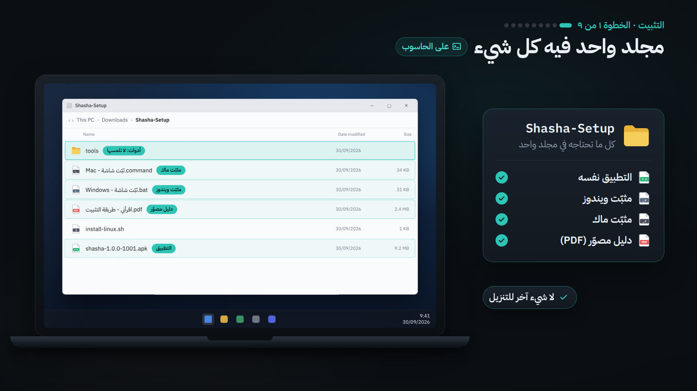
2
فعّل خيارات المطوّر التلفاز
Settings ← System ← About.
على Android TV OS build اضغط OK سبع مرات.
تظهر رسالة: You are now a developer!
تلفازك من نوع آخر (Sony أو Philips أو Xiaomi أو Nvidia أو Fire TV)؟ خطواته في الجزء 2، صفحة 5.
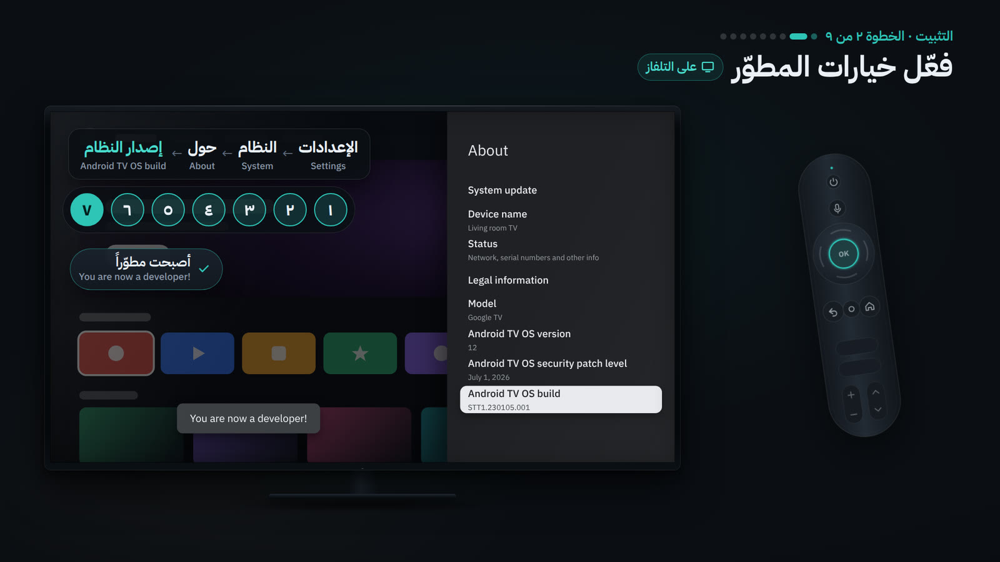
دليل شاشةالجزء 3 · التثبيت
3
فعّل تصحيح الأخطاء التلفاز
Settings ← System ← Developer options.
فعّل USB debugging.
وفعّل Network debugging إن وجدته.
في Fire TV الخيار اسمه ADB debugging (صفحة 5).
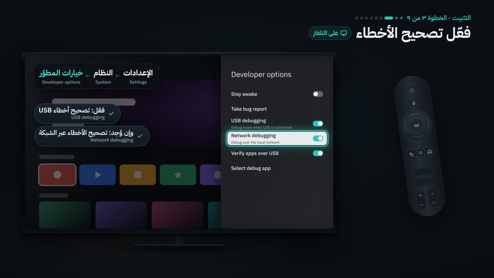
4
اعرف عنوان التلفاز التلفاز
العنوان أربعة أرقام بينها نقاط، مثل 192.168.1.50.
اكتبه على ورقة.
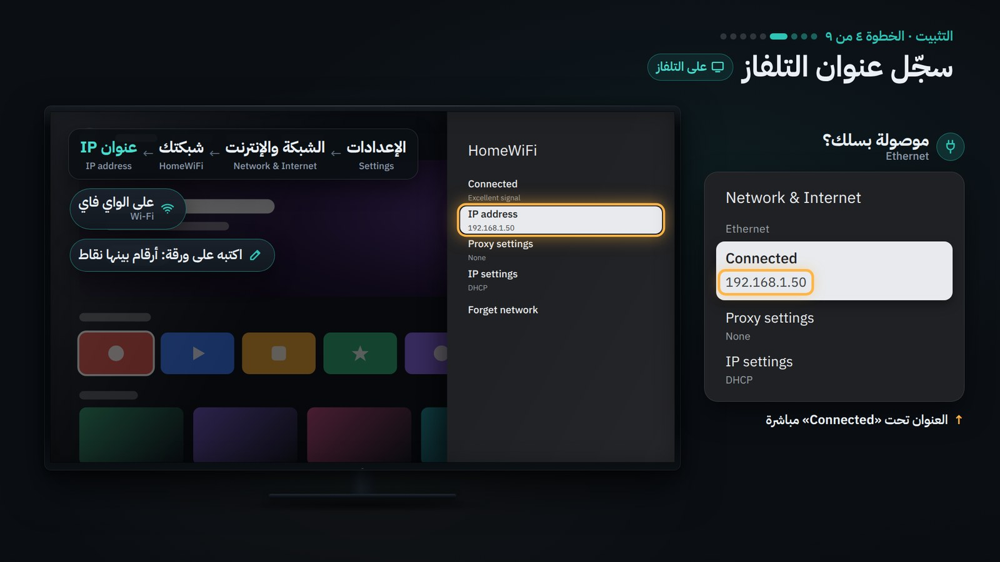
متصل بالـ Wi-Fi
Settings ← Network & Internet ← اسم شبكتك.
اقرأ الرقم تحت IP address.
متصل بسلك (Ethernet)
Settings ← Network & Internet ← Ethernet.
اقرأ الرقم تحت Connected.
تغيّر العنوان؟
قد يتغيّر بعد إطفاء الراوتر. أعد هذه الخطوة واكتب العنوان الجديد.
دليل شاشةالجزء 3 · التثبيت
5
شغّل المثبّت الحاسوب
افتحه كما في المربعات أدناه.
يسألك: «اكتب عنوان IP للشاشة». اكتب العنوان، ثم Enter.
يعرف Fire TV أيضاً، ويكتب اسم جهازك وطرازه ليتأكد أنك وصلت إلى التلفاز الصحيح.
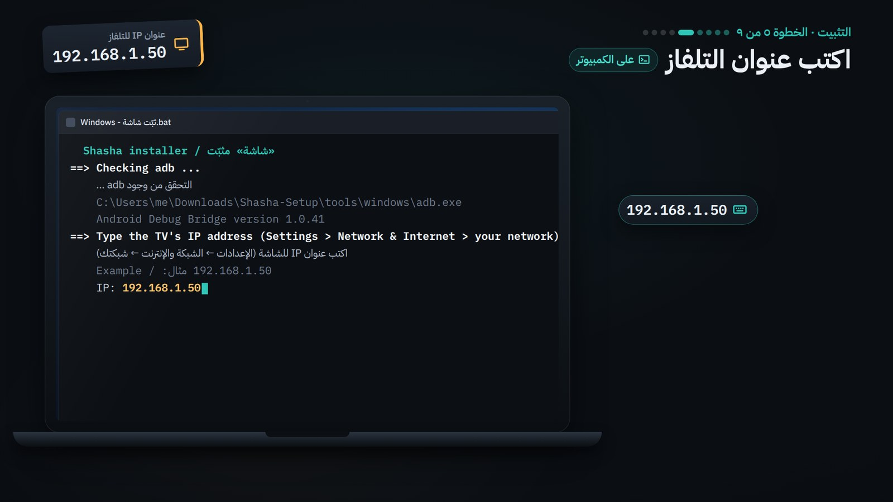
ويندوز
انقر مرتين على Windows - ثبّت شاشة.
إن ظهر تحذير ويندوز الأزرق: More info، ثم Run anyway.
ماك
انقر مرتين على Mac - ثبّت شاشة.
إن رفض ماك فتحه: System Settings ← Privacy & Security ← Open Anyway.
من macOS 15 Sequoia لم يعد «الزر الأيمن ثم Open» يكفي.
لينكس
افتح الطرفية (Terminal) داخل المجلد، واكتب:
bash install-linux.sh
ثم Enter.
6
اسمح للحاسوب التلفاز
تظهر على التلفاز: Allow USB debugging?
ضع علامة على: Always allow from this computer
ثم اضغط OK.
لديك 60 ثانية. وFire TV تسأل السؤال نفسه.
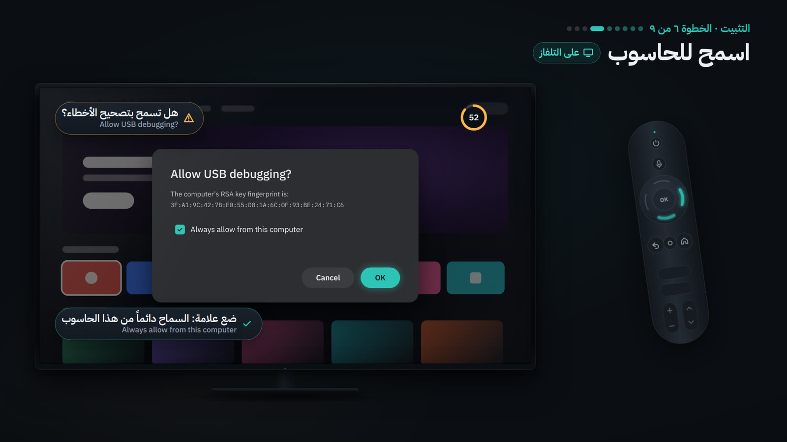
دليل شاشةالجزء 3 · التثبيت
7
انتظر، المثبّت يكمل وحده الحاسوب
يكتب اسم التلفاز وطرازه (مثل Sony أو Amazon). تأكد أنه تلفازك.
يثبّت «شاشة» ويمنحه صلاحياته.
يسألك: هل تطفئ يوتيوب الرسمي؟ اكتب y أو n.
يفتح «شاشة» ويكتب «تمّ!». اضغط أي زر لتغلق النافذة.
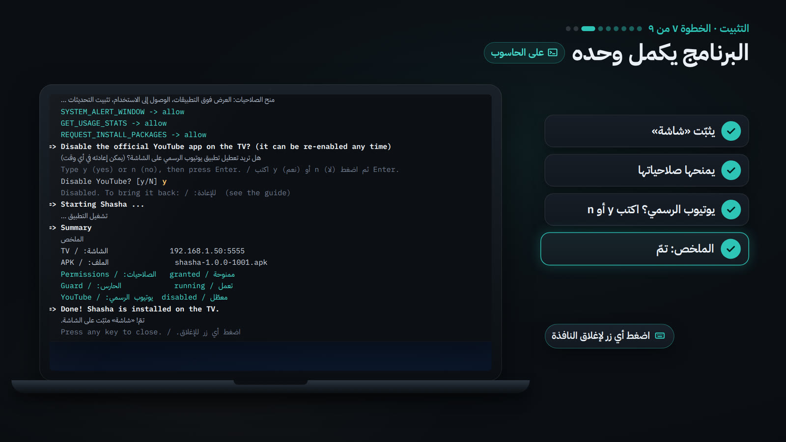
8
أول تشغيل التلفاز
«شاشة» يطلب رمز الوالدين، ثم ملفك، ثم ملف طفلك.
التفاصيل في الجزء 4 (صفحة 11).
لا ينجح شيء؟
انظر الجزء 9: حل المشاكل (صفحة 23).
دليل شاشةالجزء 3 · التثبيت
9
اربط جوالك (اختياري) الجوال
في «شاشة»: الإعدادات ← الخادم المحلي ← رمز الاقتران QR.
امسح الرمز بكاميرا الجوال.
أضف الصفحة إلى الشاشة الرئيسية للجوال.
هذه صفحة تتحكم في التلفاز. أما تطبيق «شاشة» للمشاهدة على الجوال نفسه فهو الجزء 8.
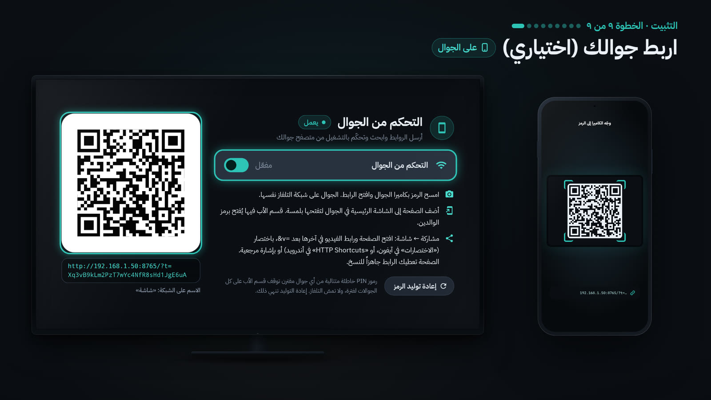
انتهى التثبيت
التحديث لاحقاً
الإعدادات ← فحص التحديثات: بضغطة واحدة (الجزء 10).
أو شغّل المثبّت من جديد (الخطوة 5). بياناتك تبقى كما هي.
الإزالة
على التلفاز: Settings ← Apps ← شاشة ← Uninstall.
هذا يمسح بيانات «شاشة» كلها.
لمن يعرف سطر الأوامر
المثبّت يقبل --undo: يعيد يوتيوب الرسمي ويسحب صلاحيات «شاشة» ويبقيه مثبّتاً.
دليل شاشةالجزء 4 · أول تشغيل
الجزء 4
أول تشغيل
أربع شاشات قصيرة، مرة واحدة.
1 رمز الوالدين
من 4 إلى 8 أرقام. احفظه جيداً.
يفتح ملفك والإعدادات، ويُخرج الطفل من ملفه.
2 ملف لطفلك
اسم وصورة. يبدأ بساعة يومياً، من 7 صباحاً إلى 10 مساءً، وبلا مقاطع Shorts.
تغيّر ذلك لاحقاً من الجزء 6.
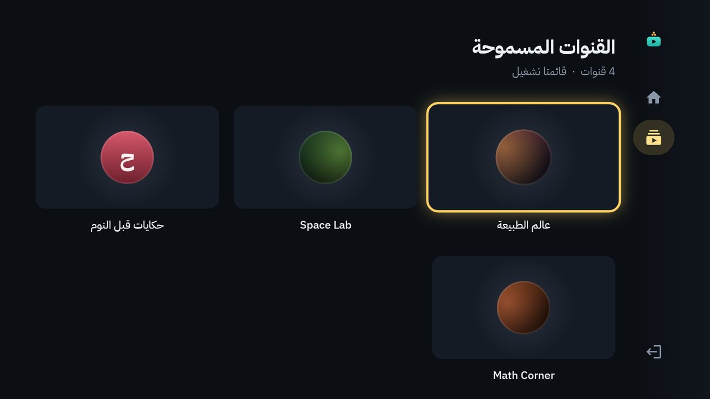
3 القنوات المسموحة
اختر القنوات التي يراها الطفل.
لا يرى الطفل شيئاً غيرها.
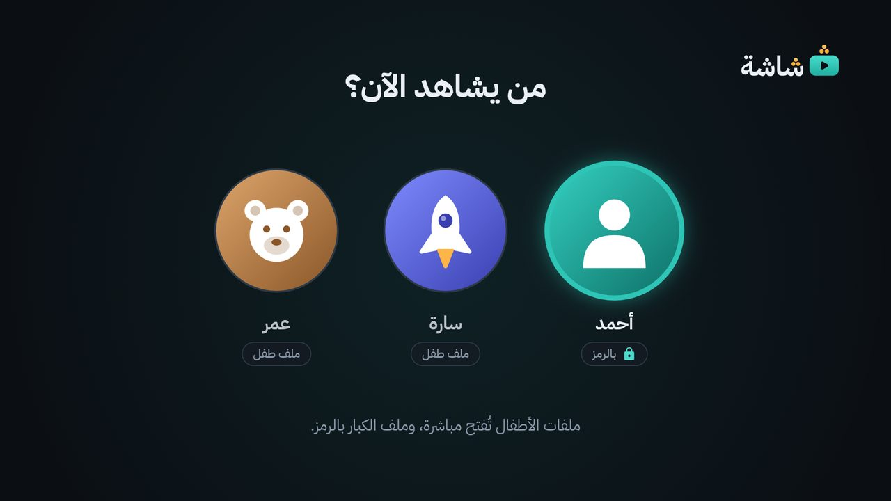
4 من يشاهد الآن؟
تظهر عند كل تشغيل.
ملف الطفل يُفتح مباشرة. ملفك يحتاج الرمز، إلا إن أوقفته (الجزء 6).
دليل شاشةالجزء 5 · الاستخدام اليومي
الجزء 5
الاستخدام اليومي
تهت؟ اضغط BACK عدة مرات حتى تصل إلى الرئيسية.
الرئيسية
أحدث فيديوهات قنواتك، الأحدث أولاً.
تحتها، إن أبقيتهما لملفك: «مقترحة لك» وصف Shorts (الجزء 6).
القائمة الجانبية على اليمين: اضغط →.
OK مطوّلاً على فيديو: شاهد لاحقاً أو اذهب إلى القناة.
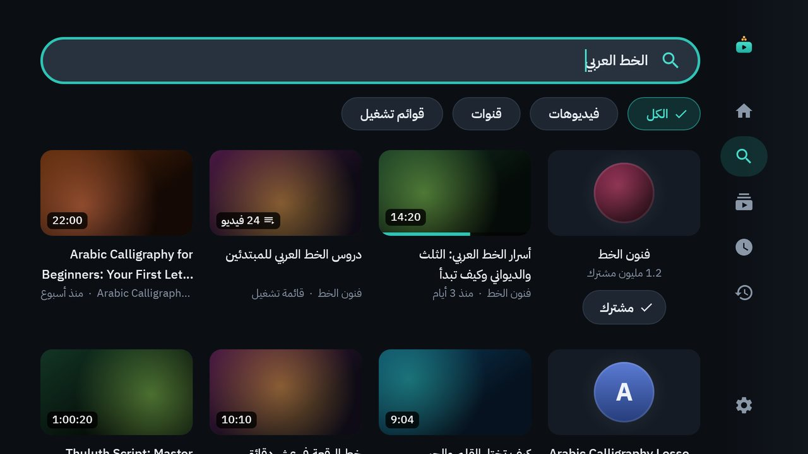
البحث
اكتب بلوحة المفاتيح. تظهر اقتراحات وأنت تكتب.
اختر النوع: الكل، فيديوهات، قنوات، قوائم تشغيل.
البحث بالصوت
اضغط زر الميكروفون في الريموت، وقل ما تبحث عنه.
يفهم العربية والإنجليزية. بدّل اللغة بزر «ع / EN» بجانب الميكروفون، أو من الإعدادات. (في Fire TV لا يظهر الميكروفون: اكتب أو ابحث من الجوال.)
القصيرة (Shorts) تظهر إن سمحت بها لملفك (الجزء 6).
زر الاشتراك يتابع القناة، وبه تلغي الاشتراك.
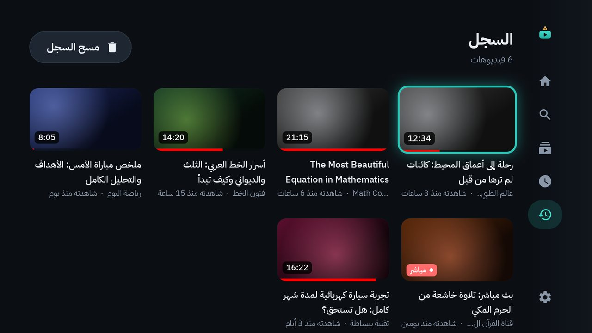
السجل
الفيديوهات التي شاهدتها، الأحدث أولاً.
شريط أحمر تحت الصورة المصغّرة يبيّن كم شاهدت، والفيديو يكمل من حيث توقفت.
مسح السجل أعلى الصفحة: يسألك قبل أن يمسح، وتبقى مواضع الاستكمال.
شاهد لاحقاً
تريد فيديو في وقت آخر؟ OK مطوّلاً عليه، ثم شاهد لاحقاً. تجده في قائمة «شاهد لاحقاً».
دليل شاشةالجزء 5 · الاستخدام اليومي
المشغّل
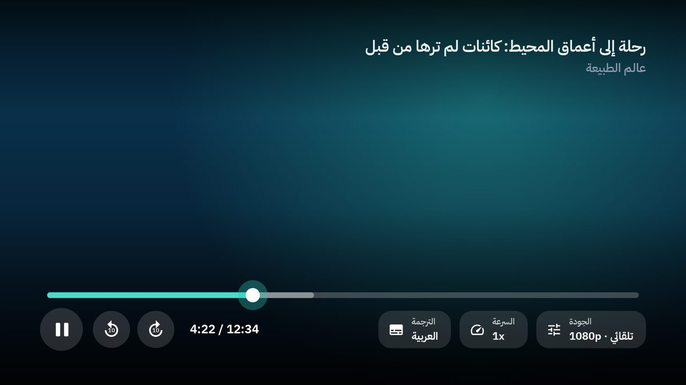
OK
إيقاف مؤقت وتشغيل.
←→
رجوع وتقديم 10 ثوانٍ.
↓
أزرار الترجمة، والسرعة، والجودة. وتحتها «مقترحة» إن فعّلتها لملفك.
السرعة
من 0.5× حتى 4×.
الاستكمال
الفيديو يكمل من حيث توقفت.
قائمة التشغيل
الفيديو التالي يبدأ بعد 5 ثوانٍ.
الأزرار تختفي وحدها بعد 3 ثوانٍ. أي زر يعيدها.
تخطي الإعلانات المقروءة (SponsorBlock)
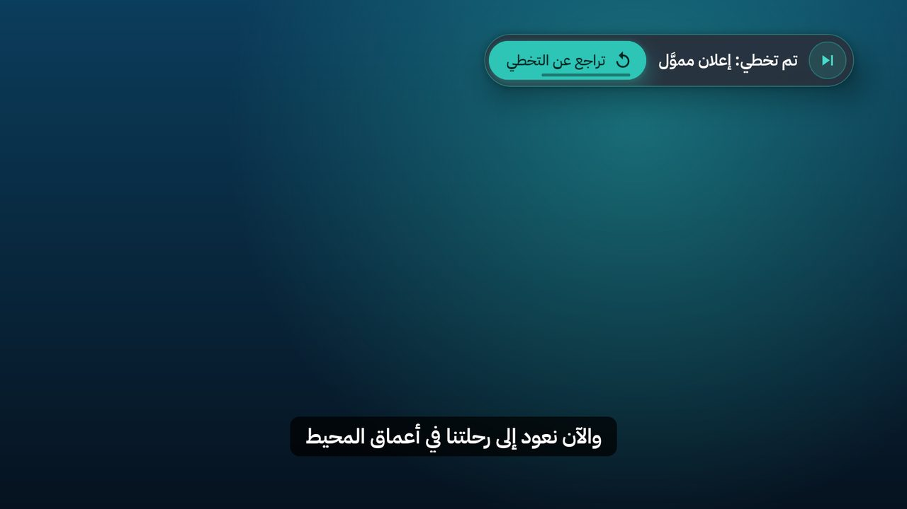
«شاشة» يقفز فوق الإعلان داخل الفيديو وحده.
تظهر رسالة: «تم تخطي: إعلان مموّل».
تريد رؤيته؟ اضغط تراجع عن التخطي خلال 5 ثوانٍ.
دليل شاشةالجزء 6 · للوالدين
الجزء 6
للوالدين
كل ما في هذا الجزء يحتاج رمز الوالدين.
ملفات الأطفال
الإعدادات ← الملفات ورمز الوالدين ← إدارة الملفات.
أضف ملفاً، غيّر الاسم والصورة، أو احذف ملفاً.
ملفك بلا رمز؟
من القسم نفسه أوقف طلب رمز الوالدين عند الدخول إلى ملف الكبار (يعمل في الأصل). عندها يُفتح ملفك بلا رمز، ويستطيع الطفل فتحه أيضاً. الإعدادات تطلب الرمز دائماً.
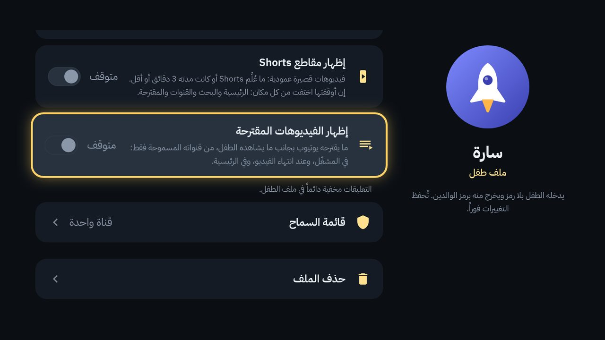
ما يظهر في كل ملف
افتح ملفاً من «إدارة الملفات»:
إظهار مقاطع Shorts: فيديوهات قصيرة عمودية. إن أوقفتها اختفت من كل مكان.
إظهار الفيديوهات المقترحة: ما يقترحه يوتيوب بجانب ما يُشاهَد. في ملف الطفل من قنواته المسموحة فقط.
للكبير يعملان في الأصل. وملف الطفل الجديد يبدأ بهما متوقفين.
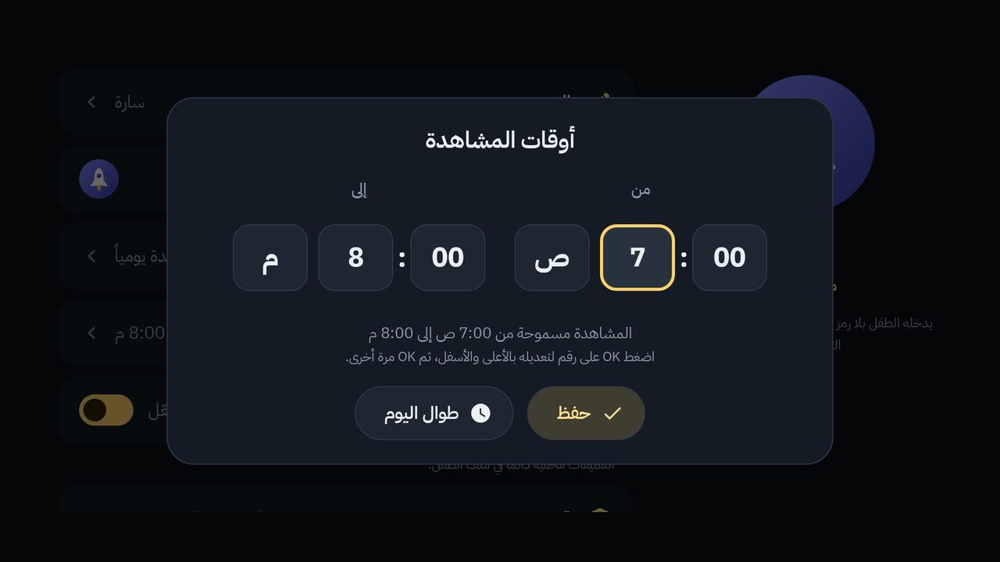
الوقت اليومي والجدول
الإعدادات ← الحصص والجداول.
الحصة: كم دقيقة في اليوم.
الجدول: من أي ساعة إلى أي ساعة.
قبل النهاية بـ 5 دقائق يظهر تنبيه هادئ.
دليل شاشةالجزء 6 · للوالدين
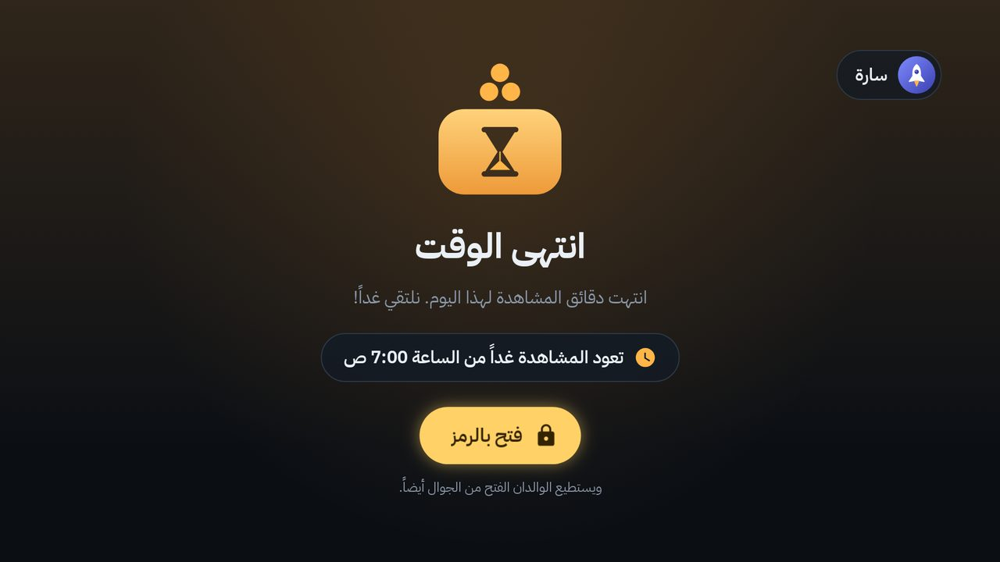
حين ينتهي الوقت
تظهر شاشة «انتهى الوقت».
وقت إضافي؟ أدخل الرمز واختر 15 أو 30 أو 60 دقيقة، أو بقية اليوم.
أو افتح الوقت من الجوال.
قوائم السماح والحظر
السماح
لكل طفل قائمته. لا يرى غيرها.
الحظر
قنوات تُخفى عن كل الملفات.
للإضافة بسرعة: OK مطوّلاً على بطاقة قناة، أو أرسل رابطها من الجوال.
التحكم من الجوال
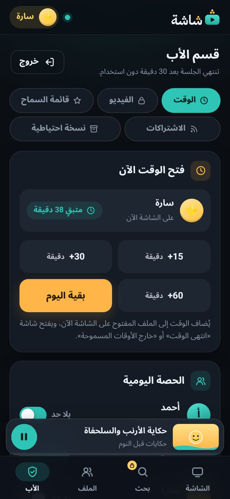
أوقف الفيديو وشغّله، وابحث، وأرسل رابطاً إلى التلفاز.
حين يصل رابط يسألك التلفاز: قبول أو رفض. وما يُعرض الآن يكمل حتى تقبل.
قسم الأب (بالرمز): افتح وقتاً إضافياً، وأضف قناة إلى القوائم، وأظهر Shorts والمقترحة أو أخفها لكل ملف.
ومنه تُنهي فيديو مقفولاً بالوضع الجاد.
الجوال والتلفاز على شبكة البيت نفسها. وتتبع الصفحة لغة «شاشة».
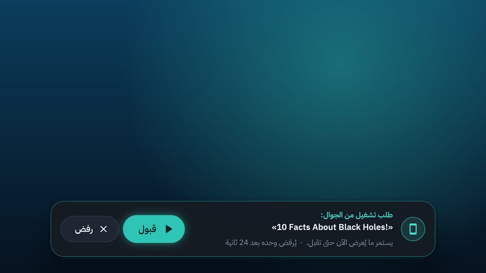
هكذا يظهر الطلب على التلفاز.
دليل شاشةالجزء 6 · للوالدين
الوضع الجاد
الفيديو الذي يبدأ لا يُترك حتى ينتهي.
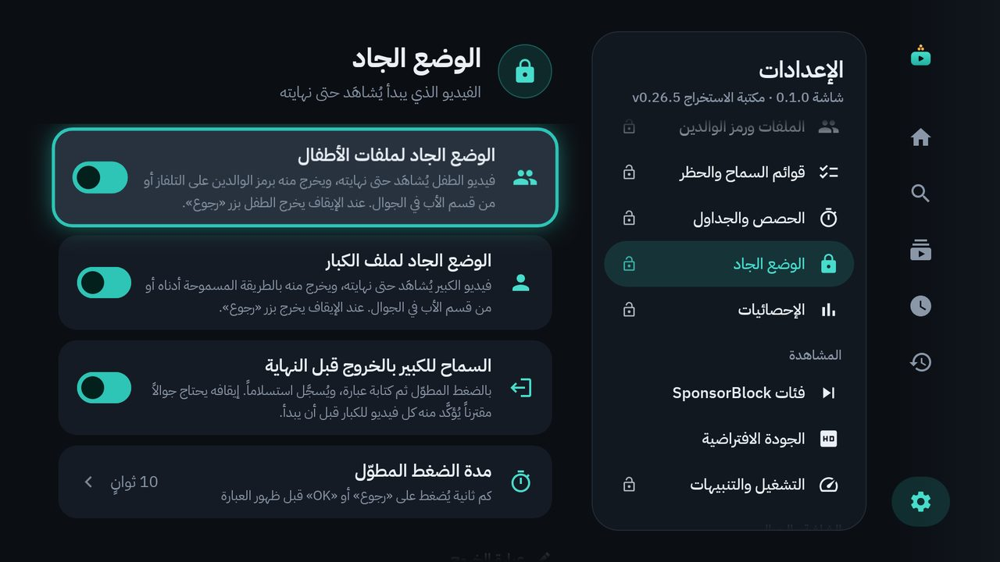
الإعدادات ← الوضع الجاد: مفتاح لملفات الأطفال ومفتاح لملف الكبار، ويعملان من البداية.
الطفل يخرج قبل النهاية برمز الوالدين فقط، أو من قسم الأب في الجوال.
الكبير يضغط BACK مطوّلاً 10 ثوانٍ، ثم يكتب عبارة تظهر له.
الخروج المبكر يُسجَّل «استسلاماً» في الإحصائيات.
أوقفت السماح للكبير بالخروج قبل النهاية؟ يصير كل فيديو للكبار ينتظر «تأكيد» من الجوال قبل أن يبدأ، ولا يُنهيه قبل نهايته إلا قسم الأب. هذا يحتاج جوالاً مقترناً.
وإن أوقفت أحد المفتاحين فزر BACK يُخرج من أي فيديو في تلك الملفات.
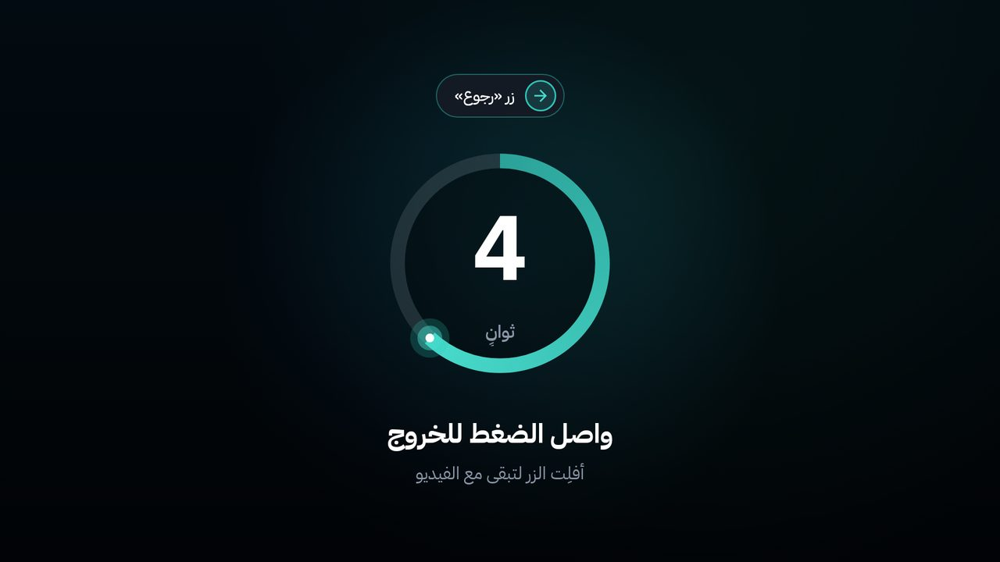
1. واصل الضغط حتى تكتمل الدائرة.
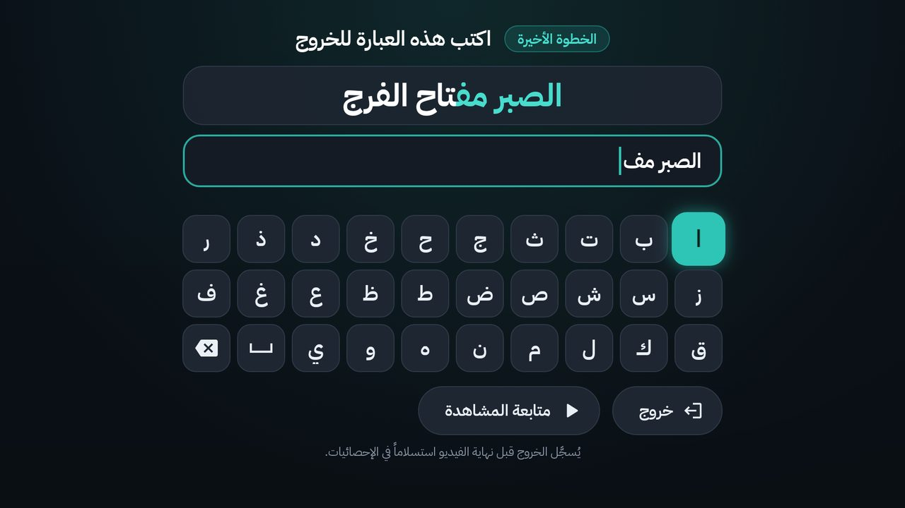
2. اكتب العبارة كما تظهر، ثم خروج.
دليل شاشةالجزء 7 · الإعدادات
الجزء 7
الإعدادات
كلها خلف رمز الوالدين. لا تحتاج تغيير شيء: الأصل يعمل جيداً.
الإعداد
ما يفعله
الأصلي
الوضع الجاد
الوضع الجاد لملفات الأطفال
فيديو الطفل يُشاهَد حتى نهايته
يعمل
الوضع الجاد لملف الكبار
فيديو الكبير يُشاهَد حتى نهايته
يعمل
السماح للكبير بالخروج قبل النهاية
بالضغط المطوّل ثم العبارة. إيقافه يحتاج جوالاً مقترناً
مسموح
مدة الضغط المطوّل
قبل ظهور العبارة
10 ثوانٍ
عبارة الخروج
عشوائية من قائمة، أو عبارتك الخاصة
عشوائية
التخطي المسموح
تقديم لا يمنع عدّ الفيديو منتهياً
30 ثانية
الوقت والتنبيهات
التنبيه قبل انتهاء الوقت
تنبيه هادئ قبل التوقف
5 دقائق
مدة ظهور التنبيه
كم يبقى على الشاشة
12 ثانية
خيارات الوقت الإضافي
ما يظهر بعد الرمز في «انتهى الوقت»
15 · 30 · 60 دقيقة
رمز الوالدين
المحاولات قبل الإيقاف
رموز خاطئة متتالية
5
مدة الإيقاف الأولى
وتطول كل مرة
5 دقائق
بقاء الإعدادات مفتوحة
بعد إدخال الرمز
5 دقائق
طلب الرمز بعد مغادرة التطبيق
بعد غياب «شاشة» عن الشاشة
15 ثانية
الرمز عند دخول ملف الكبار
إيقافه يفتح ملفك بلا رمز. الإعدادات تبقى بالرمز
يعمل
التشغيل
السرعة عند بدء الفيديو
والقائمة في المشغّل حتى 4×
1×
خطوة التقديم والإرجاع
بضغطة يمين أو يسار
10 ثوانٍ
إخفاء أزرار التحكم
بلا ضغط أثناء التشغيل
3 ثوانٍ
العدّ قبل الفيديو التالي
داخل قائمة التشغيل
5 ثوانٍ
عودة الطفل إلى الرئيسية
بعد انتهاء فيديو الطفل
10 ثوانٍ
دليل شاشةالجزء 7 · الإعدادات
الإعداد
ما يفعله
الأصلي
تخطي المقاطع الدعائية (SponsorBlock)
الفئات
أي المقاطع تُتخطى
إعلان مموّل، ترويج ذاتي، تذكير بالتفاعل، المقدمة، الخاتمة
مهلة «تراجع عن التخطي»
في ملف الكبار
5 ثوانٍ
مدة رسالة التخطي
في ملف الطفل
3 ثوانٍ
ما يظهر في كل ملف (الملفات ورمز الوالدين ← إدارة الملفات)
إظهار مقاطع Shorts
لكل ملف. إن أُوقفت اختفت من كل مكان
للكبير: تظهر. للطفل: مخفية
إظهار الفيديوهات المقترحة
لكل ملف. في ملف الطفل من قنواته المسموحة فقط
للكبير: تظهر. للطفل: متوقفة
إخفاء التعليقات
لكل ملف. في ملف الطفل مخفية دائماً
ظاهرة للكبار
حدّ الفيديو القصير (Shorts)
ما هو أقصر منه يُعدّ قصيراً
180 ثانية
الجودة، والجوال، والصوت
الجودة الافتراضية
أعلى جودة، وتهبط وحدها إن ضعفت الشبكة
تلقائي حتى 1080p
التحكم من الجوال
تشغيل الخادم المحلي وإيقافه
يعمل
منفذ الخادم
رقم من 1024 إلى 65535
8765
لغة البحث الصوتي
العربية أو الإنجليزية
العربية
التطبيق
اللغة
لغة الواجهة كلها وصفحة الجوال
العربية
المظهر
داكن أو فاتح
داكن
فحص التحديثات
يفحص «شاشة» ويحدّث نفسه بضغطة واحدة
عند الطلب
أخطأت في إعداد؟
في كل قسم زر إرجاع الإعداد الأصلي.
ولإرجاع كل شيء: الإعدادات ← إعادة الضبط ← إرجاع كل الإعدادات إلى وضعها الأصلي.
لا يُحذف شيء
تبقى الملفات، والرمز، والاشتراكات، والسجل، والقوائم، والحصص.
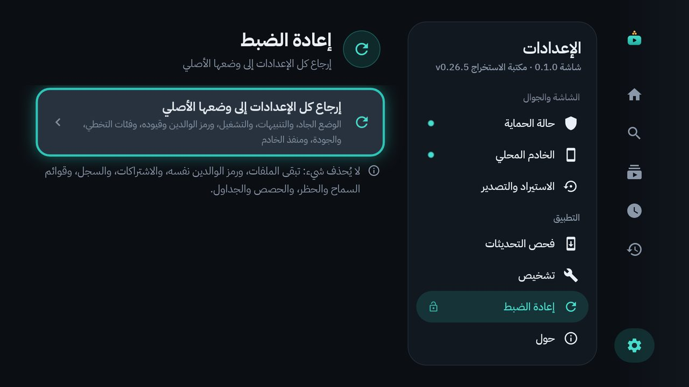
دليل شاشةالجزء 7 · الإعدادات
المظهر واللغة
اللغة
الإعدادات ← المظهر واللغة: العربية (الأصل) أو English.
بالإنجليزية تنقلب الواجهة كلها من اليسار إلى اليمين. وصفحة الجوال تتبعها.
المظهر
من القسم نفسه: داكن (الأصل) أو فاتح.
الداكن أريح للعين في غرفة معتمة.
الدليل والفيديو داخل «شاشة»
الإعدادات ← الدليل والفيديو: هذا الدليل صفحاتٍ تقلّبها بالريموت، وفيديو الشرح. باللغة التي اخترتها.
أين رقم الإصدار والرخص؟
في أسفل صفحة فحص التحديثات: رقم الإصدار، وبيانات تخطي المقاطع، والمكتبات ورخصها (الجزء 10).
حول
من صنع «شاشة»، وتطبيقات المطوّر الأخرى:
من صنع احمد نايفه — صُنع بحب لعائلتي
لكل تطبيق رمز QR. امسحه بكاميرا الجوال.
shadhra.appGoogle Play
شذرة Shadra
الرمز الأول لموقعها، والثاني لصفحتها في Google Play.
shadhra.app
صِلة Silah
github.com/Ahmad-Nayfeh/silah
مصاريف Masarif
github.com/Ahmad-Nayfeh/masarif
خطوة Khatwa
github.com/Ahmad-Nayfeh/khatwa
دليل شاشةالجزء 8 · «شاشة» على جوالك
الجزء 8
«شاشة» على جوالك
تطبيق أندرويد للجوال: تشاهد به يوتيوب على جوالك نفسه.
ليس صفحة الجوال
صفحة الجوال (الخطوة 9) تتحكم في التلفاز. أما هذا فتطبيق كامل للمشاهدة على الجوال، ويعمل وحده بلا تلفاز.
بحث باقتراحات
تظهر الاقتراحات وأنت تكتب. اختر: الكل، فيديوهات، قنوات، قوائم.
القنوات وقوائم التشغيل
صفحة لكل قناة ولكل قائمة تشغيل.
مشغّل كامل
تشغيل في الخلفية، ونافذة صغيرة (صورة داخل صورة).
السرعة حتى 4×
وتغيير الجودة وقت المشاهدة.
تخطي الإعلانات المقروءة
وحده، ببيانات SponsorBlock.
التنزيل
الفيديو كاملاً، أو الصوت فقط.
مكتبتي
الاشتراكات، والسجل، والمشاهدة لاحقاً، والتنزيلات.
تحديث بزر واحد
الإعدادات ← فحص التحديثات.
التثبيت في ثلاث خطوات
احصل على الملف. اسمه shasha-mobile-….apk، وتجده في «مجلد Phone» داخل مجلد Shasha-Setup الذي نزّلته (مثبّت التلفاز لا يلمسه)، وفي صفحة الإصدار نفسها. انقله إلى جوالك، أو نزّله عليه.
افتحه. من تطبيق الملفات أو المتصفح. سيقول أندرويد إن التثبيت من هذا المصدر غير مسموح: اضغط الإعدادات وفعّل السماح من هذا المصدر (Install unknown apps) للتطبيق الذي فتحت منه الملف. مرة واحدة فقط.
ثبّته. ارجع واضغط تثبيت، ثم فتح. يعمل على أندرويد 8 أو أحدث.
دليل شاشةالجزء 8 · «شاشة» على جوالك
هكذا يبدو
صورة الشاشة هناالرئيسية
الرئيسية: أحدث فيديوهات قنواتك
صورة الشاشة هناالمشغّل
المشغّل: سرعة، وجودة، ونافذة صغيرة
صورة الشاشة هنامكتبتي
مكتبتي: التنزيلات والسجل
نصائح
التنزيل
من قائمة أي فيديو اختر تنزيل، ثم الفيديو (MP4 بالصوت) أو الصوت فقط (M4A).
يُحفظ الفيديو في Movies/Shasha والصوت في Music/Shasha.
الخلفية والنافذة الصغيرة
من الإعدادات: التشغيل في الخلفية يُبقي الصوت حين تغادر التطبيق أو تُطفئ الشاشة، وصورة داخل صورة تحوّل الفيديو إلى نافذة صغيرة.
التحديث
الإعدادات ← فحص التحديثات ← نزّل وثبّت.
قد يطلب النظام تأكيدك، ومرة واحدة يطلب السماح بالتثبيت.
الملفات والوقت
لا ملفات أطفال في تطبيق الجوال ولا حدود وقت. الرقابة كلها في «شاشة» على التلفاز.
دليل شاشةالجزء 9 · حل المشاكل
الجزء 9
حل المشاكل
سؤال قصير، وجواب قصير.
المثبّت لا يصل إلى التلفاز
التلفاز يعمل؟ الحاسوب على شبكة البيت نفسها؟ راجع العنوان (الخطوة 4) واكتبه من جديد.
«رفضت الشاشة الاتصال»
فعّل USB debugging (الخطوة 3)، وفي Fire TV ADB debugging، ثم شغّل المثبّت من جديد.
لم تظهر «Allow USB debugging?»
أطفئ USB debugging ثم شغّله. شغّل المثبّت من جديد وراقب التلفاز.
في التلفاز «Wireless debugging» فقط
اضغط عليه، ثم Pair device with pairing code. اكتب في المثبّت العنوان والرمز (6 أرقام).
نافذة المثبّت تُغلق فوراً (ويندوز)
اضغط زر Windows واكتب cmd ثم Enter. اسحب ملف المثبّت إلى النافذة السوداء واضغط Enter. اقرأ الرسالة.
ماك يمنع فتح المثبّت
System Settings ← Privacy & Security ← Open Anyway. وافعل مثله إن مُنعت أداة adb.
«موقّعة بمفتاح آخر»
على التلفاز نسخة قديمة. احذفها: Settings ← Apps ← شاشة ← Uninstall. ثم ثبّت من جديد.
المثبّت يقول إن نظام التلفاز قديم
«شاشة» يحتاج أندرويد 7.1 أو أحدث (وFire OS 6 أو أحدث). جهازك أقدم من ذلك: استعمل جهازاً أحدث (الجزء 2).
لا أجد «شاشة» في Fire TV
Home ← Your Apps ← See all ← شاشة.
الفيديو لا يعمل
جرّب فيديو آخر. إن لم يعمل أي فيديو فغالباً غيّر يوتيوب شيئاً: الإعدادات ← فحص التحديثات (الجزء 10). وإن لم يكفِ فثبّت أحدث نسخة بالمثبّت (الخطوة 5): بياناتك تبقى.
«التحديث غير متاح في هذه النسخة»
هذه النسخة لا تستطيع فحص التحديثات. ثبّت أحدث نسخة بالمثبّت (الخطوة 5)، وبعدها يتحدّث «شاشة» بضغطة واحدة.
لا يظهر الميكروفون في البحث (Fire TV)
أجهزة Fire TV لا تقدّم البحث الصوتي لتطبيقات مثل «شاشة». اكتب بلوحة المفاتيح، أو ابحث من الجوال.
تطبيق الجوال لا يُثبَّت
فعّل السماح من هذا المصدر للتطبيق الذي فتحت منه الملف (الجزء 8). ويلزم أندرويد 8 أو أحدث.
هل الحماية مطلقة؟
لا. تكفي للاستعمال اليومي، لكن طرقاً متطرفة تتجاوزها، مثل إعادة ضبط التلفاز. انظر إلى حالة الحماية في الإعدادات من حين لآخر.
دليل شاشةالجزء 10 · التحديثات
الجزء 10
التحديثات
يوتيوب يغيّر أشياء أحياناً. عندها قد يتوقف التشغيل.
يتوقف التشغيل.لا شيء معطّل عندك.
يُنشر إصلاح.نسخة جديدة من «شاشة».
تحدّث بضغطة.من الإعدادات، بلا حاسوب.
الطريقة الأسهل: بضغطة واحدة
الإعدادات ← فحص التحديثات، ثم اضغط الزر.
إن كان معك أحدث إصدار تظهر: «لديك أحدث إصدار». لا شيء مطلوب.
وإلا نزّل «شاشة» الإصدار الجديد وثبّته وحده، ثم يُغلق لحظة ويُفتح من جديد.
على أندرويد 12 أو أحدث لا يسألك شيئاً. وقبله يسألك النظام سؤالاً واحداً: وافق.
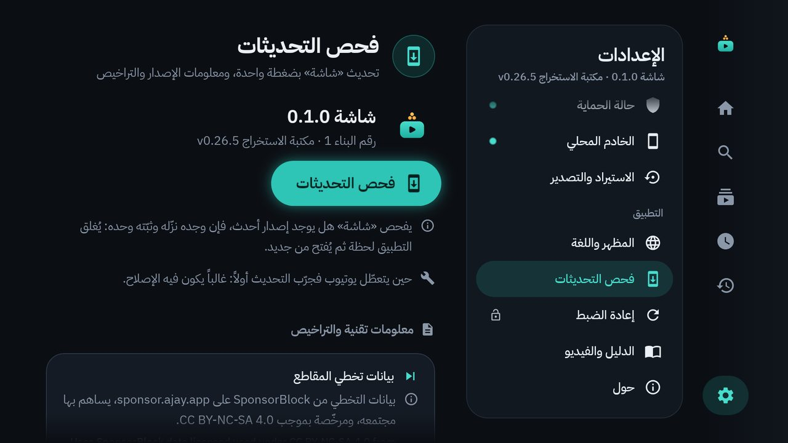
1. اضغط الزر.
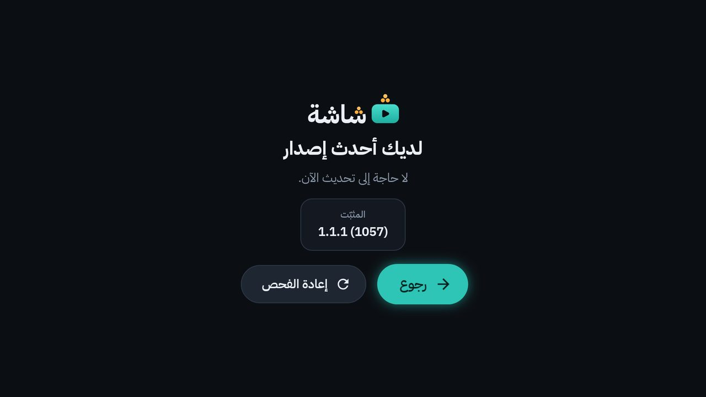
2. أحدث إصدار؟ لا شيء مطلوب.
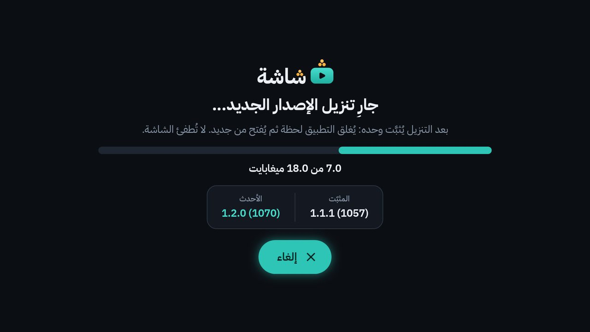
3. أو ينزّل ويثبّت وحده.
إن لم تنجح
إن ظهر «التحديث غير متاح في هذه النسخة» أو لم يكتمل التثبيت: ثبّت أحدث نسخة من الحاسوب بالمثبّت (الخطوة 5). لا يسألك التلفاز عن السماح مرة ثانية.
الإصدار والرخص
في أسفل الصفحة نفسها: رقم الإصدار، وبيانات تخطي المقاطع، والمكتبات ورخصها. وتطبيق الجوال يتحدّث بزر واحد أيضاً (الجزء 8).
بياناتك تبقى
الملفات والاشتراكات والسجل لا تُمسح عند التحديث.